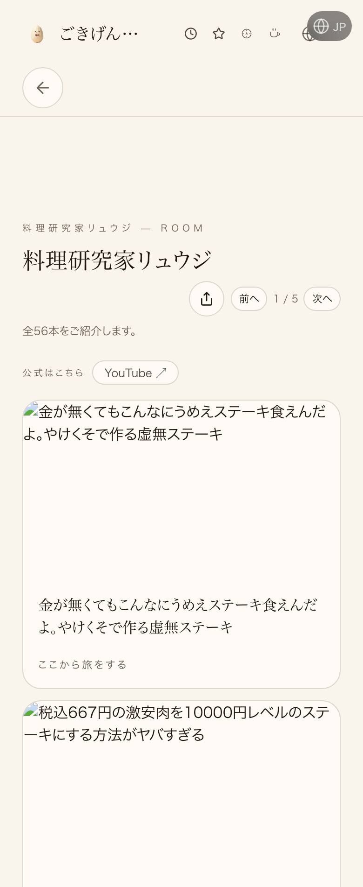
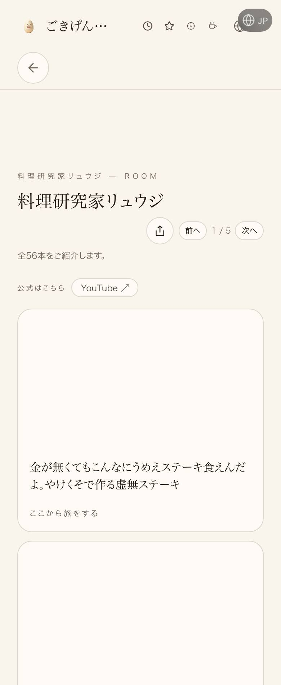
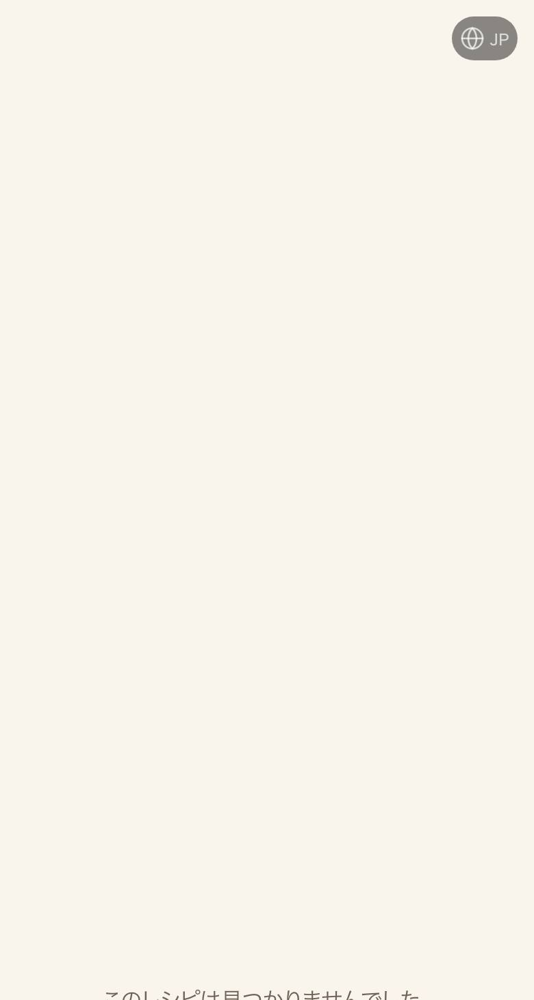
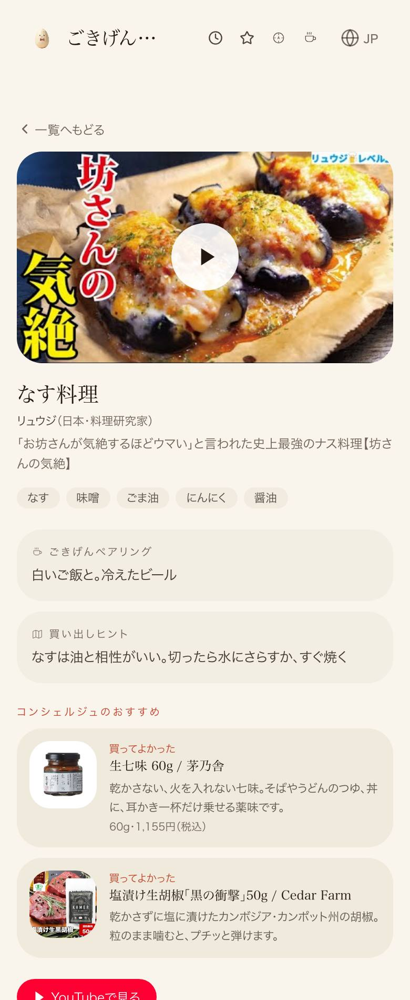

料理の数: 155（前 49） src/data/foodRadarProVideos.ts の DISH 表 動画本数: 1013（前 336） 同 ROWS の行数 チャンネルID付き: 1013/1013（取得済みチャンネル一覧と照合、不一致0・欠け0） シェフの部屋: 37（経歴80字以上 36／本人チャンネル導線 30／出典あり 37／代表料理タグ 28） 出典・公式リンク 58本を実際に開いて確認（全部生きている） ローカル描画: /food-radar-r/pro-nasu-Jt7MAUEB2fI 200・/cover-guide?artist=chef-ryuji に「バズレシピ代表取締役」あり 本番(未公開): 同じ料理ページは 404、リュウジの部屋は旧表示（配信ID psr2.cb4e48cc…）




| 確認項目 | 結果 |
|---|---|
| 料理 49→155品・動画 336→1013本（mainのファイルを直接数えた） | 155品／1013本 |
| 全動画が本人公式チャンネル由来（チャンネルIDで照合） | 1013/1013・不一致0 |
| シェフ37部屋に経歴・公式導線・出典・代表料理 | 37/37に出典、30に公式導線 |
| 出典・公式URL 58本が開く | 58/58 |
| 個人の生年・旅を止める決まり文句（「◯◯のひとつ」型）が無い | 生年0・禁句0 |
| mainへ合流 | 合流済み |
| Lovable本番へ反映（料理ページURLが200） | 未反映＝公開待ち（鍵切れ・Dispatchが押す） |